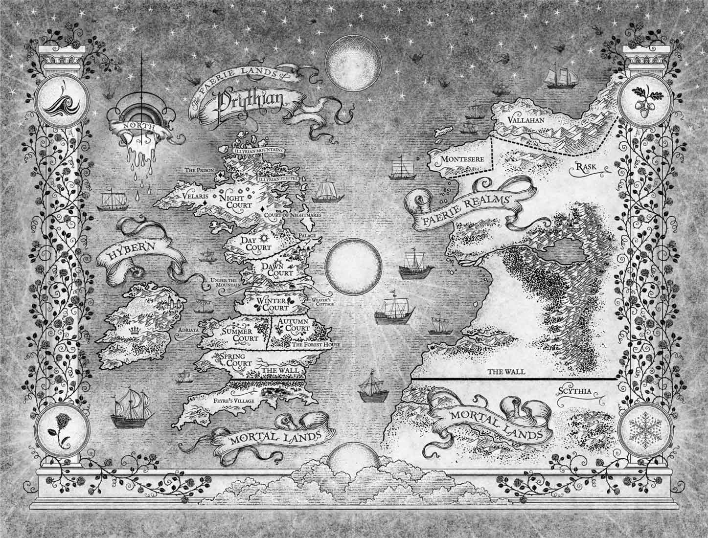

Acotar Fan Page
☰
Libros
A Court of Thorns and Roses
A Court of Mist and Fury
A Court of Wings and Ruin
A Court of Frost and Starlight
A Court of Silver Flames
Universo
Personajes
Cortes
Mapa Interactivo
Contacto
Mapa Interactivo de Prythian
Explorá el mundo de ACOTAR y descubrí cada reino, corte y territorio.

✕
+
−
⛶